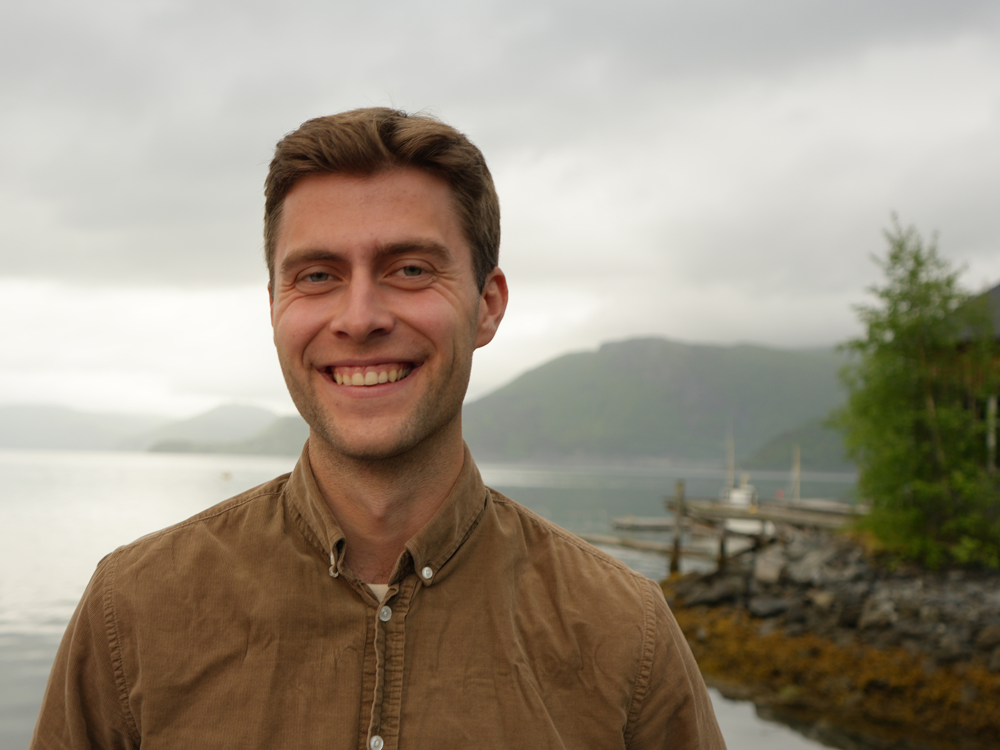
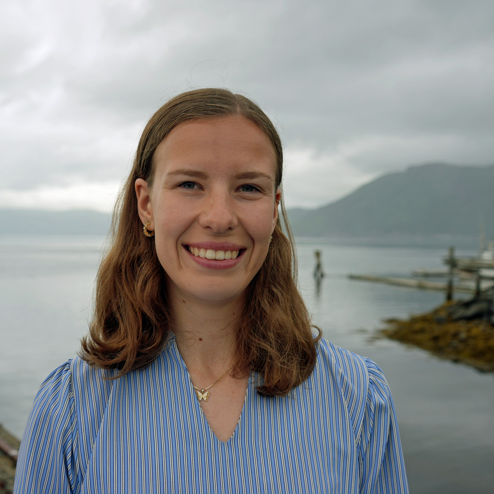
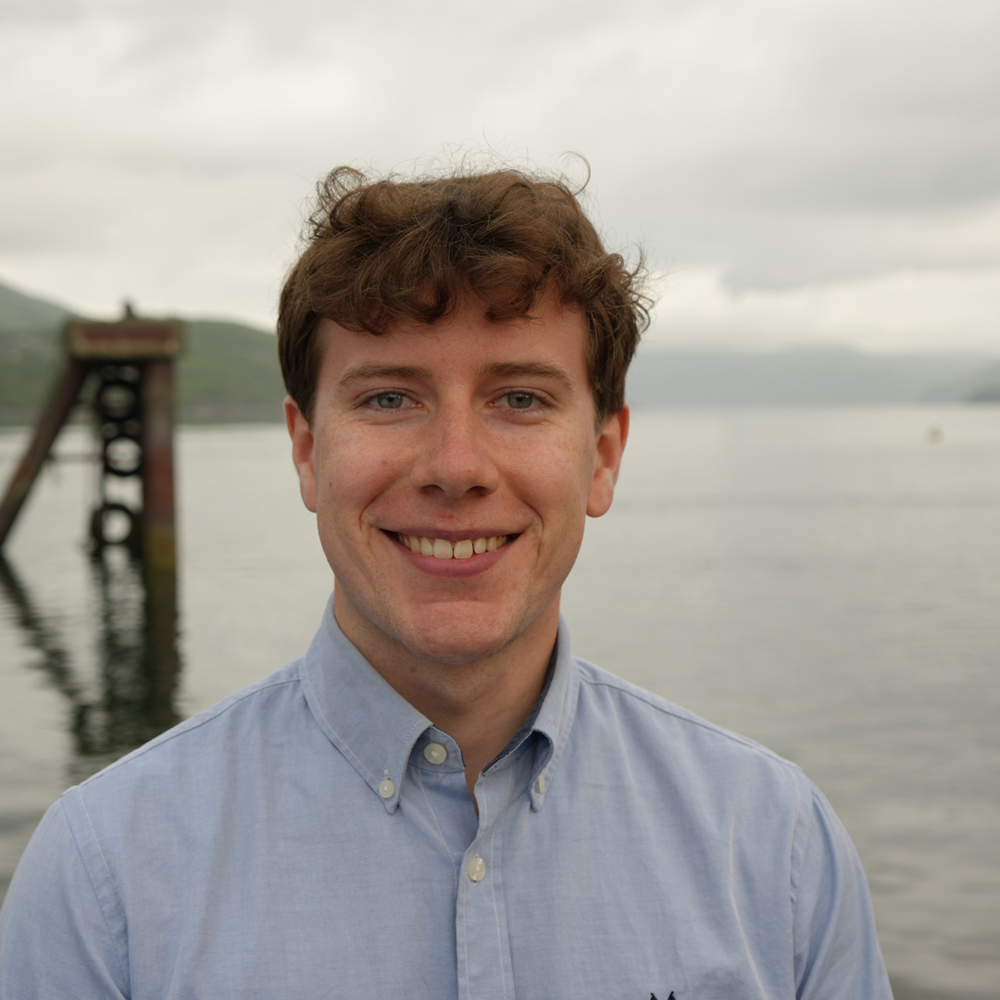

Teamet
Menneskene bak Licepliers
Vi er et tverrfaglig team med en felles ambisjon om å skape ny løsning for laksenæringen, som vil senke lusetrykket gjennom innovasjon, praktisk problemløsning og bærekraftige løsninger.

Andreas Quale Lavik
Daglig leder · Initiativtaker
Organisator og koordinator med ansvar for prosjektledelse, drift og gjennomføring. Andreas har en MSc i marinbiologi fra NTNU og over 10 års erfaring fra Seaweed Solutions.
Klikk for kontaktinfo
Andreas Quale Lavik
Kontaktinfo
Mobil: +47 97 12 26 35
E-post: andreas@licepliers.no
LinkedIn: linkedin.com/in/andreas

Oscar Kirkebøen Støren
Ansvarlig for design og utvikling
MSc-student i Marin Teknikk med spesialisering i Marin Hydrodynamikk. Oscar har hovedansvar for 3D-design, produktutvikling og tilpasning til 3D-printing.
Klikk for kontaktinfo
Oscar Kirkebøen Støren
Kontaktinfo
Mobil: +47 41 28 31 11
E-post: post@licepliers.no
LinkedIn: linkedin.com/in/oscar

Kristin Langlete
Ansvarlig for materialvalg og prototypeutvikling
Kristin har ansvar for materialvalg og utvikling av prototyper. Hun er MSc-student i industriell kjemi og bioteknologi med spesialisering i materialkjemi og energiteknologi.
Klikk for kontaktinfo
Kristin Langlete
Kontaktinfo
Mobil: +47 986 22 148
E-post: post@licepliers.no
LinkedIn: linkedin.com/in/kristin

Alexander Alterskjær
Bedriftsutvikler
Ansvarlig for print av 3D-modeller og bedriftsutvikling. Alexander er MSc-student i Industriell Økonomi og Teknologiledelse.
Klikk for kontaktinfo
Alexander Alterskjær
Kontaktinfo
Mobil: +47 478 67 087
E-post: post@licepliers.no
LinkedIn: linkedin.com/in/alexander